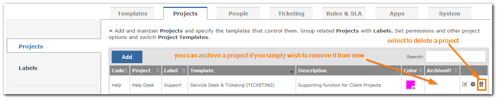

If you have the 'Gemini Administrator' privilege then you can delete a Project. You should consider carefully if you wish to do this because you can remove a project from view and prevent anyone from accessing it by simply Archiving it instead.

WarningYou cannot undo this process so you are advised to backup your database before you do it.